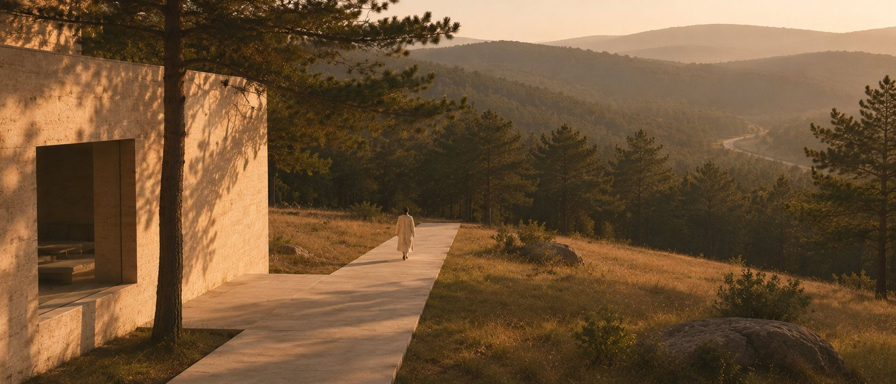
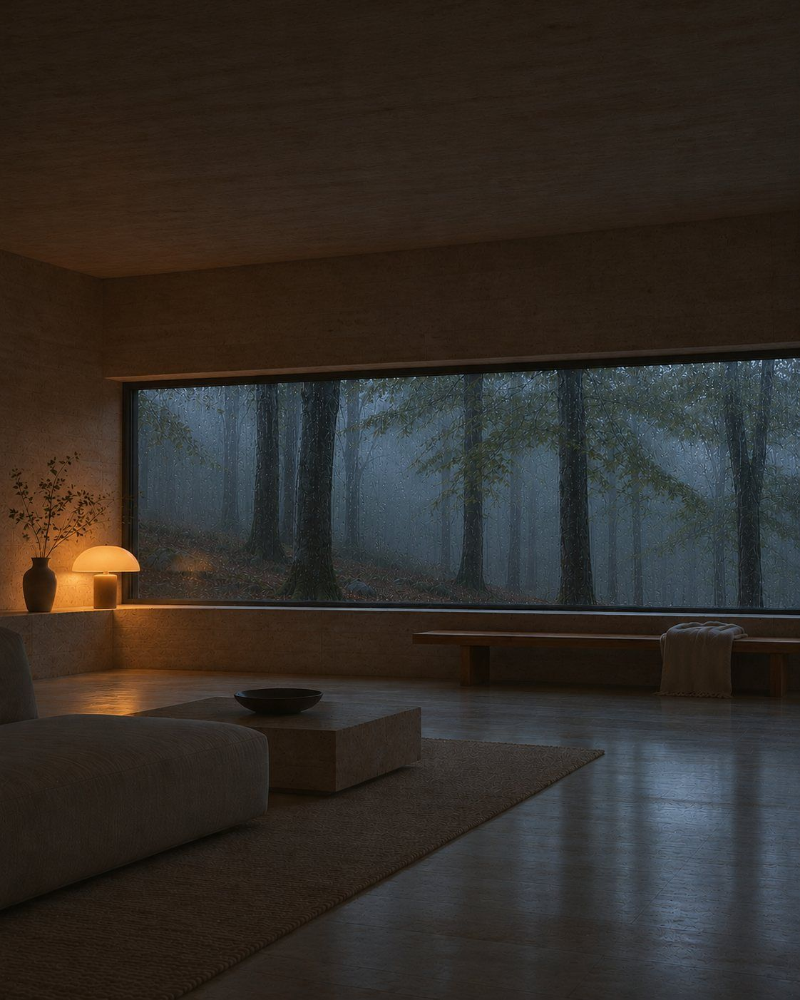
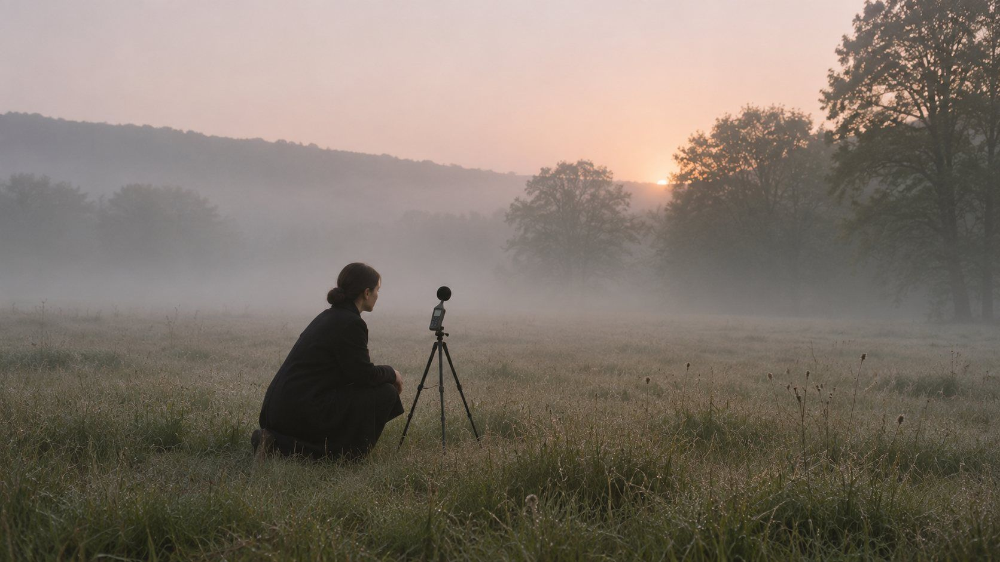
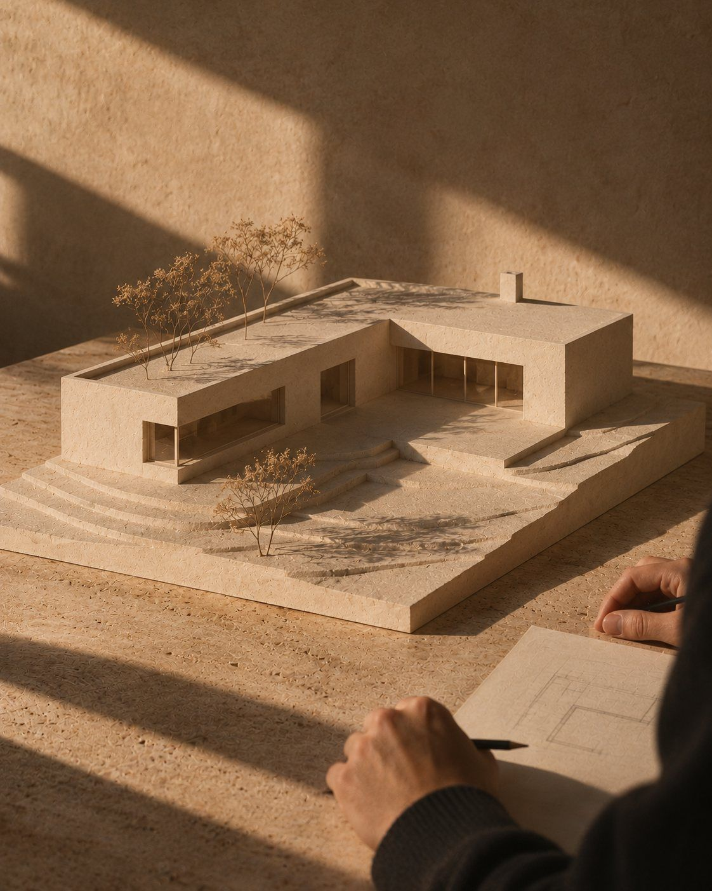
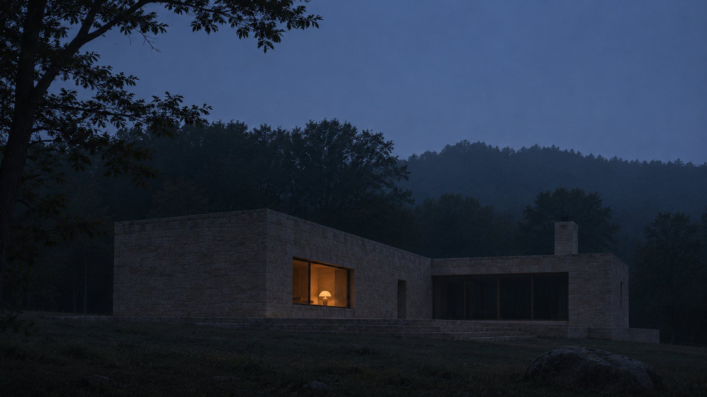

01LAND.JPG
Land
We find quiet before you buy it. Every plot gets a seven-day silence audit: mornings, nights, weekends.
We design homes where the loudest thing is the rain. In quiet places, thirty minutes from everything.
We don't build  far from the city. We build
far from the city. We build  far from the noise.
far from the noise.
Silence is not a location. It is a decision made at every step: which plot, which way the house turns, how thick the walls are, where you sleep.
STATEMENT.TXT
Silence is not a location. It is a decision.
We measure it, design for it and write it into the contract. Inside a TYSHA bedroom it is 25 dB, quieter than a whisper.

We find quiet before you buy it. Every plot gets a seven-day silence audit: mornings, nights, weekends.

The house turns its back to the road. Courtyards, folds and deep walls stop sound before it reaches you.

Rammed earth, timber, stone, wool. Materials that absorb, not echo.

Bedrooms deep inside, the kitchen facing morning light, one quiet room in every home.
Before we draw a single line, every plot passes one test. If everyday life is more than thirty minutes away, we walk away.








“The first night we woke up at 3 a.m. because it was too quiet. Now we can't sleep anywhere else.”
“We moved twenty minutes out of the city and got two hours of our day back.”

Tell us where you want to live. We'll tell you how quiet it can be.